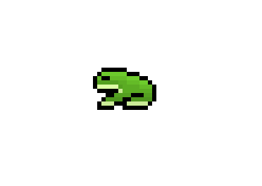
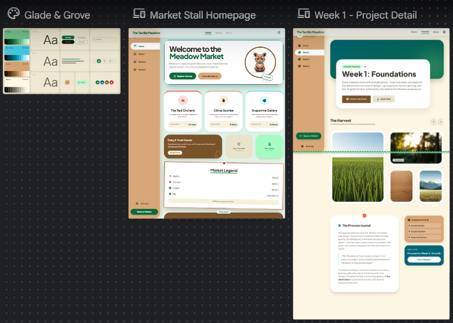
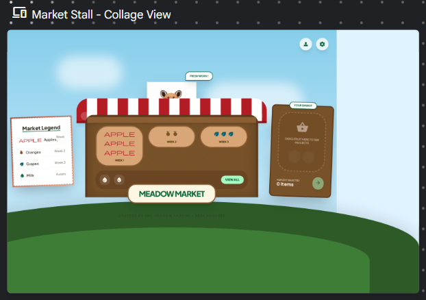
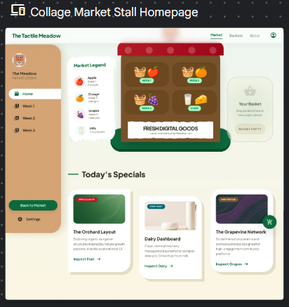

This week's tutorial was mainly surrounding the new platform that launched the night before the class...the brand new stichwithgoogle.com platform that ai generates ui/ux designs based on the prompts given. We put in prompts to generate our initial ideas for our workbooks to see what ai would give us. Fortunately, the generations didn't meet a lot of our expectations...


